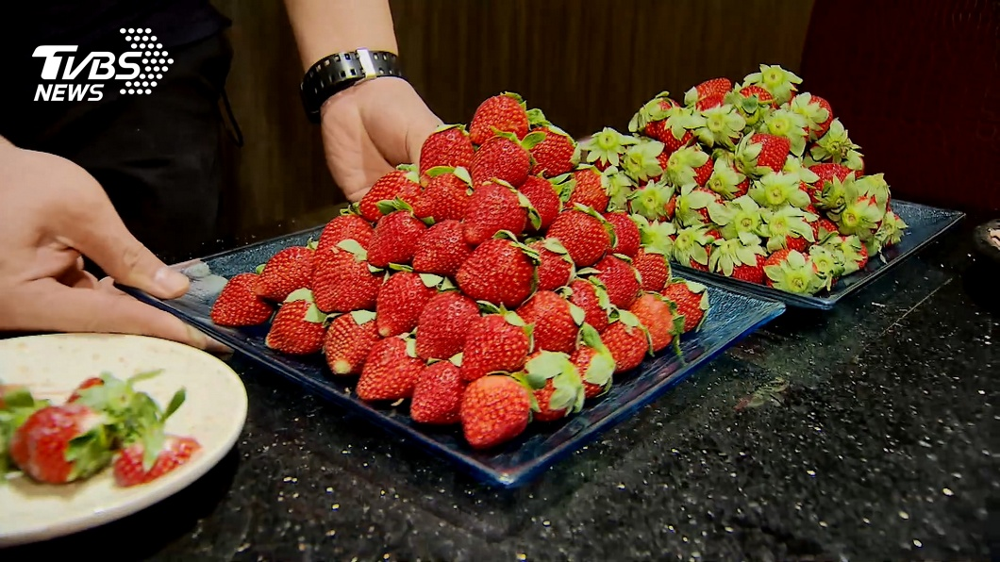

燉飯上，一顆罪惡奶油馬鈴薯泥，旁邊加上好幾顆草莓切片， 連米粒也有草莓香，或這座草莓耶誕樹，一顆顆擺上去， 淋下煉乳，讓人看了口水直流。 不只鍋物甜點，吃buffet也開始有草莓， 一樣吃飽飽飽，50 cafe推草莓鮭魚、草莓壽司到草莓雞腿， 陸續準備推出；台北君悅耶誕節後有草莓蛋糕、草莓塔登場； 寒舍艾美連外帶甜點店都出草莓戚風、草莓飲料， 讓大家今年去哪兒都能吃到冬季限定的草莓酸甜滋味。

拉麵拚戰！100g和牛加魚子醬vs.居酒屋小菜 熱呼呼窯烤蛋包舒芙蕾 冬天溫暖饕客的胃 哥本哈根美食探索 漢堡、捲餅藏丹麥魂 心得
熱呼呼窯烤蛋包舒芙蕾 冬天溫暖饕客的胃
哥本哈根美食探索 漢堡、捲餅藏丹麥魂
心得